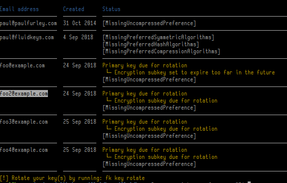

05 October 2018
This week I've been on my own, spending some quiet time with my head in the OpenPGP spec.
At the start of the week we realised that there's a subtle (recoverable) problem with the keys we've been generating with Fluidkeys.
We use Golang's crypto/openpgp library which has a function for generating a key. Unfortunately it seems that this function neglects to set preferences on the new key.
There are 3 types of preferences (hash, symmetric key and compression) and these are there to tell other people what encryption algorithms like AES-256 you accept. The idea is you put the strongest ones first, then when the other person tries to encrypt to you, their software finds the most preferred, mutually supported algorithm.
Unfortunately, the OpenPGP specification says that if two implementations can't agree on an algorithm they fall back to the lowest common denominator, Triple DES and SHA1, which you must support. These are old, weak algorithms, so it's not ideal.
Because newly generated keys didn't have any preferences set, any messages encrypted to them were indeed using Triple DES. It wasn't straightforward to actually observe this, but once I had a sneaky suspicion it might be happening I managed to get GnuPG to spit out some debug and take a look.
The last two weeks we've been talking about key rotation — we've managed to get Fluidkeys automatically expiring and re-generating encryption subkeys. (Release 0.2 coming very soon, promise!)
Since we've built Fluidkeys to automatically, regularly inspect the key this is the ideal mechanism for looking for poorly configured keys too. Alongside key rotation, we can tweak the key's configuration and generate new self-signatures.
So this week I've been hard at work collating best practice to work out, what isthe ideal configuration? And how much deviation should Fluidkeys tolerate from that?
Riseup's OpenPGP best practices guide came in handy as usual, and mostly I've been encoding their rules into actual code. You can see that working in the screenshot below (the text hasn't been designed yet):

This builds on the ideas in a previous prototype I hacked up earlier in the year which allows you to test your PGP key.
Our hunch is that it will be valuable for Fluidkeys to bring together and codify best practice — not just for individual keys, but ways of using PGP together in a team.
Next week we'll turn those warnings into actions so Fluidkeys can just fix them for you, then continue racing towards our next release 0.2...
Thanks for reading!
— Paul
All feedback is welcome, pop us an email to hello@fluidkeys.com